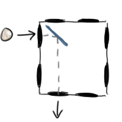

Written by Nathan Pinsker
This puzzle is a text-based escape room adventure game. You're presented with twelve boxes and have to figure out how they all work in order to escape.
The first thing you might do is examine the door. It has a message with nine blanks on it:
___ ___, ___ ___ ___ ___ ___ ___ ___? (13)
There is also a sign on the wall to examine. The sign says that three of the twelve boxes are practice, leaving nine "non-practice" boxes, which matches the number of blanks. This suggests that each box corresponds to one blank somehow.
The basic structure of each box is as follows: a box can be thought of as a grid of unit squares, and each unit square inside the box might contain a mirror that will deflect the path of a rolling ball. When you roll the wooden ball into the box, it bounces off these mirrors at 90-degree angles, causing it to exit through a different hole. By using the number of mirrors hit (the "thunk" sounds) and the exit hole, you can deduce most (or even all) of the box's contents.
Let's look at the first practice box as an example. If you roll a ball eastward along row 1 into this box, then it will produce 1 thunk and will exit the south side of the box on column 1. This means there must be a mirror in row 1, column 1, running from northwest to southeast, which causes the ball to bounce off it and exit through the south side:

This is the only way that the ball can exit through the south side of the box in column 1 and produce exactly one thunk. Similarly, we also know there must NOT be a mirror in row 2, column 1, because otherwise our ball wouldn't have exited at the place it did. In a similar way, we can also determine the contents of the other two spots in this practice box (which turn out to be empty).
However, not all the mirrors can always be determined this way! Solvers may also notice that each box also features a placard, and placards on the first three boxes use the words MEASURED and MASS. The word MEASURED refers to the number of mirrors that you can indisputably determine the position of, and the word MASS refers to the total number of mirrors that are in the box. In some of the later boxes, the MASS isn't even uniquely determined, and the intent was to guide solvers away from focusing on the concept -- it's there primarily to guide you towards an understanding of how the boxes work.
Examining a placard on a non-practice box yields a seemingly meaningless message, which is different for each box. Taking the first letters of each of these messages gives the phrase "WORD INDEX", which points solvers slightly towards using a number to index into the sentence and obtain a word. Solvers may notice at this point that the number of words on a box's placard is always exactly equal to the box's area (its width times its height), which is also the maximum number of mirrors that can be inside each box. This suggests the way forward: once you find the MEASURED value for each box, you can index that value into the corresponding placard to obtain a word.
The contents of each box are detailed below. The character '/' represents a mirror running from the southwest to the northeast, and the character '\' represents a mirror running from the northwest to the southeast. The character '.' represents no mirror. All measurable mirrors will be notated in bold red.
In the case that a box has multiple possible configurations, at least two of them will be presented. These configurations do not necessarily represent all the possibilities for the mirrors in each box. They're just meant to give you an idea of the possibilities that exist, and which mirrors are measurable.
Box 1 (practice): \. .. Box 2 (practice): // // Box 3 (practice): /.\ //\ ... ... \// \./ Box 4: /\. \// ..\ Box 5: /\/\ /..\ \../ .\/. /..\ ./\. \/\/ \../ Box 6: //\. /\\. \/\\ \\/\ /\\/ //// \\/. \//.
For the next three boxes, solvers are warned that the boxes have some new rules. Rolling balls into the same hole will yield the observation that the result is no longer constant. However, the result is still rather predictable: it turns out to repeat itself after every two rolls. That is, if you repeatedly roll a ball into some hole, then the number of thunks you hear on every odd roll will always be the same, as will the number of thunks you hear on every even roll. Working along these lines will yield the core mechanic of these boxes: every mirror changes its orientation after a roll (it either switches from / to \, or vice versa).
All possible configurations for the next three boxes are presented below.
Box 7: /\.\ \.\\ \/// Box 8: /\/ /\/ /\/ \.\ \/\ \\\ /\/ /\/ /\/ Box 9: ./\. /\/\ \/\/ .\/.
For the final three boxes, solvers will find that the box is playing by new rules once again. Repeatedly rolling a ball into the same slot will still produce a repeating sequence, but the period of this sequence may be longer or shorter depending on which entrance to the box you choose. However, there are some other patterns that solvers may happen upon. For example, in the first box of this type (box 10), if you repeatedly roll the ball eastward along row 1, then it will produce 1 thunk pop out of column 1 going north on exactly every other roll. Some more exploration will yield the core mechanic of these new boxes: every mirror will change its orientation after it's hit by the ball. (Note that a mirror may be hit multiple times during one roll of the ball -- in this case, it will flip its orientation each time, immediately after it's hit.)
It turns out that, no matter how the box is structured, these mechanics are powerful enough that you can always figure out the exact orientation of every mirror in the box. Thus, for these boxes, the MEASURED value is always equal to the number of mirrors inside.
As a final note, switching to a new box will always reset the box you're currently using to its original configuration. Solvers will likely discover this fact for themselves; they can use it to their advantage in order to create a consistent state for a given box, or reset the state of a box that they're unsure about.
All possible configurations (namely, one) for each of the final three boxes are presented below:
Box 10: \\/ ... \./ Box 11: \\/\ ./.\ \.// /\\/ Box 12: //\// \/.\/ \/\./ \./.\ //\\\
The final MEASURED value for each of the nine boxes is:
6 4 8 10 8 12 5 13 21
As noted above, the first letters of each of placard gives the phrase "WORD INDEX", which points toward indexing each value into its corresponding placard's message. Doing this and then inserting these words in order into the cluephrase on the door yields:
BIG RIG, GOLD ATOM SMASHED TO NEW HALF ROBOT? (13)
This is a cryptic clue. "Big rig" is SEMI; "gold" is AU; "atom smashed" is TOMA (an anagram of ATOM), "to" is kept as "to", and "new" is N. The final answer is SEMIAUTOMATON, which fits the enumeration and the definition ("half robot?").
Author's Notes
This puzzle was among the last to be added to our hunt, going from idea to final form in the last three weeks. One thing I would have liked to do (with more time and knowhow) would be to present the boxes through an interactive graphical interface, which would have made the experience more intuitive and fluid.
This puzzle was inspired by Black Box Game, a computer science contest problem where you have to program a computer to figure out boxes like the last three. However, that problem doesn't obscure any of the mechanics from you, and I made this puzzle with the hope that unraveling the boxes' mechanics for yourself would be an enjoyable experience as well.